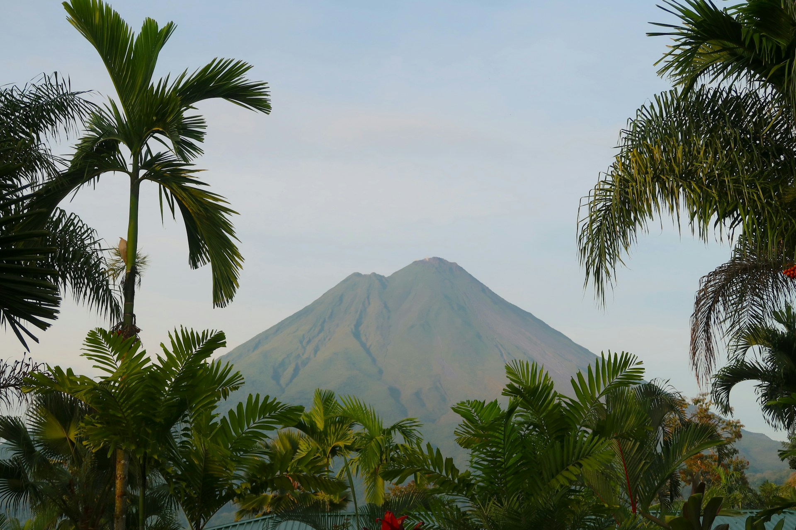

Breathtaking destinations perfect for a romantic getaway
Step outside Taniti City and enjoy a day immersed in nature. From the warm beaches along the coast to the incredible beauty of the volcano, you'll never forget your experience in nature when you visit Taniti.
14 Relaxing Beaches
Taniti is home to the most beautiful white, sandy beaches in the world. Each beach is staffed by lifeguards from dawn until dusk, so you can unwind without worry. Whether you're a land-loving lounger, a turqoise water toe-dipper, or a deep blue diver, the beaches of Taniti are a must.

Lush Rainforest Trails
The majority of Taniti is cloaked by tropical rainforests full of vibrant life. Walk along the trails leading around the island to get up-close and personal with nature.
Bug spray is available at all Taniti general stores.

Stunning Active Volcano
The centerpiece of Taniti, a brilliant testament to the power of nature. The best view of Taniti is from the summit of the island's very own active volcano.
The summit trail is safe for the whole family!
